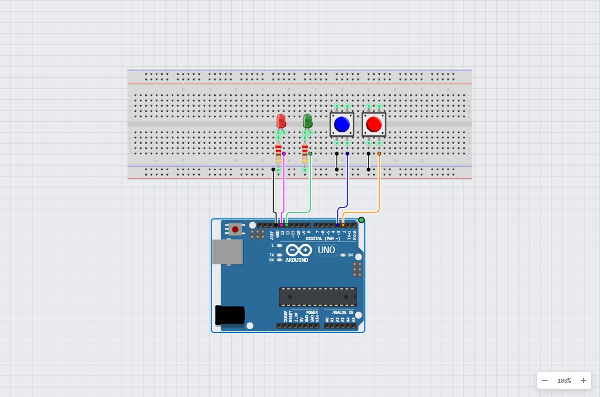
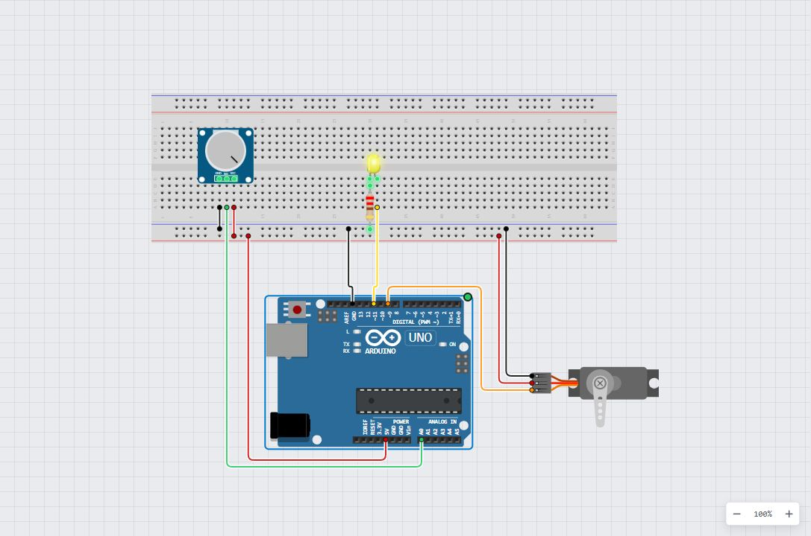
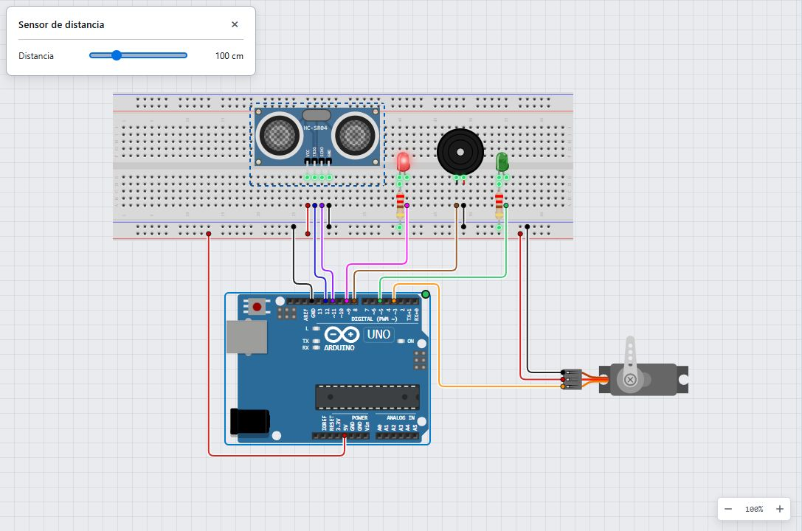
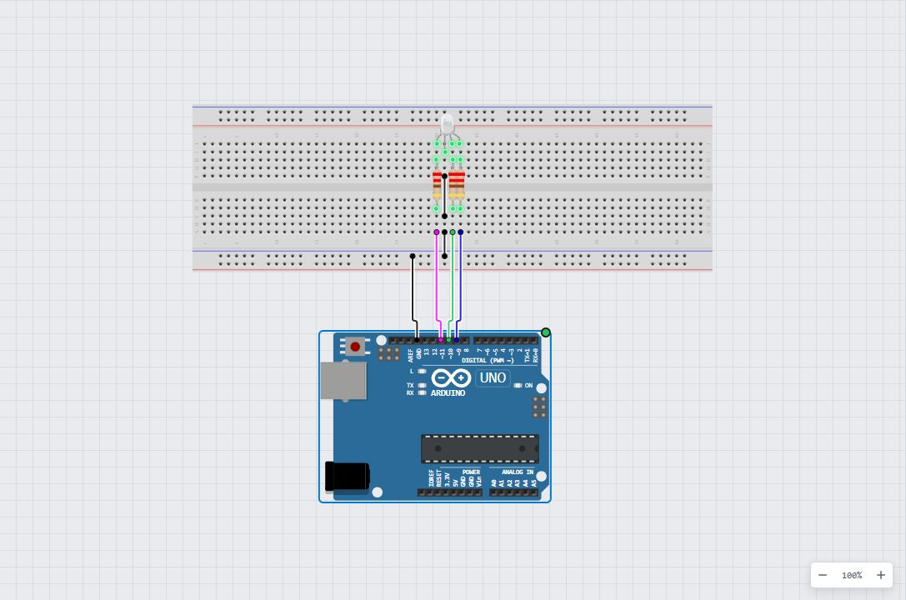
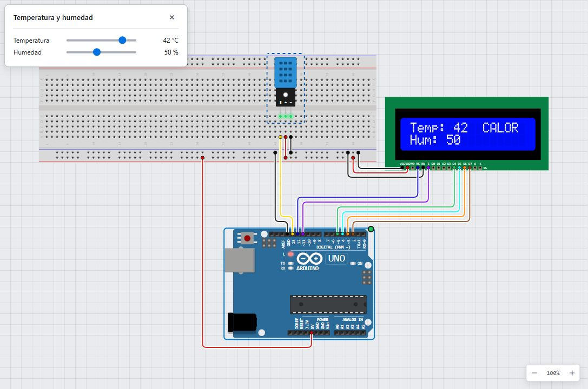
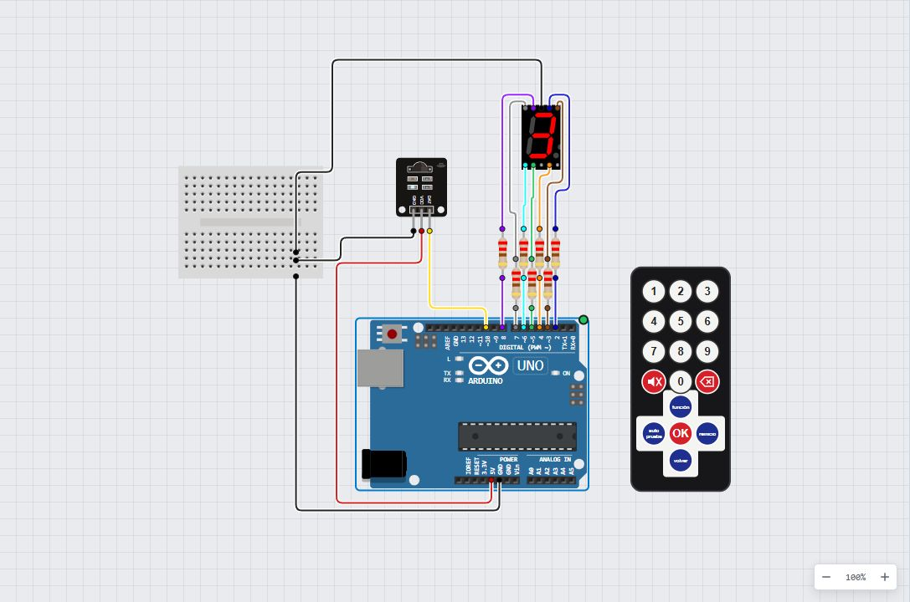
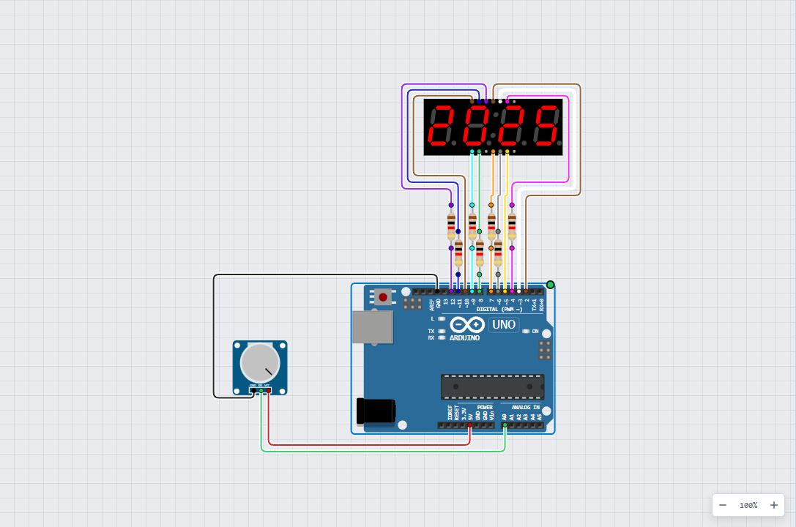
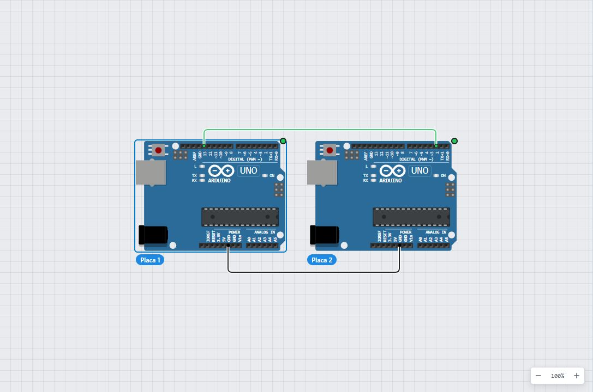

Prueba en la placa
Solo lo que el simulador no puede decir: rebote de botones, sonido, ruido de sensores, patitas y polaridad de las piezas del kit, y la red de la sala. La lógica de un programa corre igual en la placa (es el mismo .hex). Actualizado el 2026-11-14.
Plan: 8 armados y la sala
| # | Armado | Se carga | Qué decide | Deja innecesario |
|---|---|---|---|---|
| 1 | Botones y sonido | 03, 11, piano del curso | Rebote, notas seguidas | 01, 02, 04 (ya probada), 15, sirena |
| 2 | Perilla y servo | 05 | Ruido de la perilla, corriente del servo, «50.00» en el monitor | 12, perilla y contador del curso |
| 3 | Barrera | 06 (+ theremin y estacionamiento) | Umbral real del sensor, servo con pito | alarma del curso |
| 4 | Colores | 08 | LED RGB: resultó de ánodo común. Orden de patas, mezclas | 14, sesión 9 del curso |
| 5 | Pantalla y temperatura | 07 | Cableado real de la LCD, patitas del DHT11 | fiebre del curso |
| 6 | Control y dígito | 09 | Códigos de las 17 teclas, ¿cátodo o ánodo? | — |
| 7 | Marcador | 10 | Display de 4 dígitos: fantasmas, brillo, ¿cátodo o ánodo? | — |
| 8 | Dos placas | 13 | Cada placa a su puerto | — |
| 9 | Sala | — | Firewall, cargar desde otro equipo | — |
En negrita, lo que estaba pendiente desde el 13-nov. Probados el 15-nov: 1, 2, 3 y 4. Orden sugerido para lo que queda: 6, 5, 7, 9; después 8.
Antes de empezar
Cada ejemplo: botón «Abrir» → repo\frontend\public\ejemplos\NN-….bloquino → «Cargar a la placa». Los pines de cada tabla son los del programa: no cambiar bloques. Rojo = 5V, negro = GND.
1Botones y sonido 03 · 11 · piano ✔ probado el 15-nov
Un armado para tres programas. La rockola (04) usa este mismo armado y ya se probó el 14-nov con el buzzer pasivo.

| Pieza | Conexión |
|---|---|
| Botón 1 (rojo) | pin 2 ↔ GND, a caballo del canal |
| Botón 2 (azul) | pin 3 ↔ GND |
| LED rojo | pin 13 → pata larga; pata corta → 220 Ω → GND |
| LED verde | pin 12 → pata larga; pata corta → 220 Ω → GND |
| Buzzer pasivo | + → pin 8; − → GND |
03-botones
11-reflejos
Piano del curso Curso_Arduino\sketches\sesion-05\piano\piano.bloquino
Desde el 15-nov las notas van de izquierda a derecha en los pines 4, 3 y 2 (do, mi, sol): con los botones de los pines 2 y 3 suenan sol y mi; el del pin 4 no hace falta.
2Perilla y servo 05 ✔ probado el 15-nov

| Pieza | Conexión |
|---|---|
| Perilla | extremos → 5V y GND; centro → A0 |
| Servo | naranja → pin 9; rojo → 5V; café → GND |
| LED amarillo | pin 11 → pata larga; pata corta → 220 Ω → GND |
3Barrera 06 · theremin · estacionamiento ✔ probado el 15-nov
Parte del armado 2: el servo pasa al pin 3 y se suman el sensor, otro LED y el buzzer.

| Pieza | Conexión |
|---|---|
| Sensor de distancia | VCC → 5V; Trig → pin 12; Echo → pin 11; GND → GND |
| Servo | naranja → pin 3; rojo → 5V; café → GND |
| LED rojo | pin 9 → LED → 220 Ω → GND |
| LED verde | pin 5 → LED → 220 Ω → GND |
| Buzzer pasivo | + → pin 8; − → GND |
06-barrera
Opcional, sesión 7 del curso
Mover Trig al pin 10 y Echo al 9 (desde el 15-nov el curso los lleva así; hay que sacar el LED rojo).
Archivos en Curso_Arduino\sketches\sesion-07\. Estas dos van sin marcar: no consta que se hayan probado.
4Colores 08 ✔ probado el 15-nov: ánodo común

| Pata del LED RGB | Conexión |
|---|---|
| Común (la más larga) | 5V |
| R | 220 Ω → pin 11 |
| G | 220 Ω → pin 10 |
| B | 220 Ω → pin 9 |
5Pantalla y temperatura 07 decide cableado

| Patita de la LCD | Conexión |
|---|---|
| 1 VSS · 5 RW · 16 K | GND |
| 2 VDD | 5V |
| 3 V0 | centro de una perilla (extremos a 5V y GND) |
| 4 RS · 6 E | pin 12 · pin 11 |
| 7 a 10 | libres |
| 11 D4 · 12 D5 · 13 D6 · 14 D7 | pin 5 · 4 · 3 · 2 |
| 15 A | 220 Ω → 5V |
| Sensor DHT11 | |
| S · + · − | pin 13 · 5V · GND |
6Control y dígito 09 decide código

| Pieza | Conexión |
|---|---|
| Receptor infrarrojo | señal → pin 10; + → 5V; − → GND |
| Display, fila de arriba G · F · COM · A · B | pin 7 · pin 8 · GND · pin 2 · pin 3 |
| Display, fila de abajo E · D · COM · C · punto | pin 6 · pin 5 · GND · pin 4 · libre |
| Resistencias | 220 Ω entre cada segmento y su pin (7) |
preparar display.| Códigos supuestos | |||||
|---|---|---|---|---|---|
| 1 → 69 | 2 → 70 | 3 → 71 | 4 → 68 | 5 → 64 | 6 → 67 |
| 7 → 7 | 8 → 21 | 9 → 9 | silencio → 22 | 0 → 25 | borrar → 13 |
| función → 24 | autoprueba → 8 | OK → 28 | reinicio → 90 | volver → 82 | |
7Marcador 10

| Pieza | Conexión |
|---|---|
| Display, fila de arriba DIG1 · A · F · DIG2 · DIG3 · B | pin 10 · 11 · 12 · 2 · 3 · 4 |
| Display, fila de abajo E · D · punto · C · G · DIG4 | pin 9 · 8 · libre · 7 · 6 · 5 |
| Resistencias | 1 kΩ entre cada segmento (A a G) y su pin (7); los DIG van directo |
| Perilla | extremos → 5V y GND; centro → A0 |
8Dos placas 13

| Cable | Conexión |
|---|---|
| Señal | pin 13 de la Placa 1 → pin 2 de la Placa 2 |
| Tierra | GND ↔ GND |
| USB | las dos al notebook (UNO original y clon) |
9Sala pendiente desde el 13-nov
Sin armar nada. Detalle en bloquino-dia-de-clase.md.
New-NetFirewallRule -DisplayName "Bloquino" -Direction Inbound -Protocol TCP -LocalPort 80,443 -Action Allow
No hace falta probar
| Qué | Por qué |
|---|---|
| 01-parpadeo, 02-semáforo | LED, resistencia y esperas ya se ven en el armado 1; la «L» parpadea en la rockola y en el 8. |
| 04-rockola | Probada el 14-nov con buzzer pasivo, con el arreglo de «tocar nota». |
| 12-bloques-de-pin | Mismas piezas que los armados 1 y 2; solo cambia la resistencia de 10 kΩ, y la lógica es la del simulador. |
| 14-mis-bloques | Mismo circuito que el 08; Mis bloques es solo lógica. |
| 15-latido | Botón, LED y buzzer del armado 1; «esperar … o hasta que» es solo lógica. |
Curso: sirena | 1 Hz de diferencia, no se oye. |
Curso: contador, perilla, saludo_perilla | El decimal y el recorrido del servo se ven en el armado 2. |
Curso: fiebre, fiebre_aviso | El sensor se prueba en el armado 5; la nota de 1 s es el mismo «tocar nota» de la rockola. |
Curso: lampara_humor y la rueda | El LED RGB se prueba en el 4 y el sensor en el 3. Sin mano delante queda rojo, igual que a 5 cm: se ve en el simulador. |
Resultados
Las marcas y notas se guardan en este navegador. Para pasarlas a Claude: